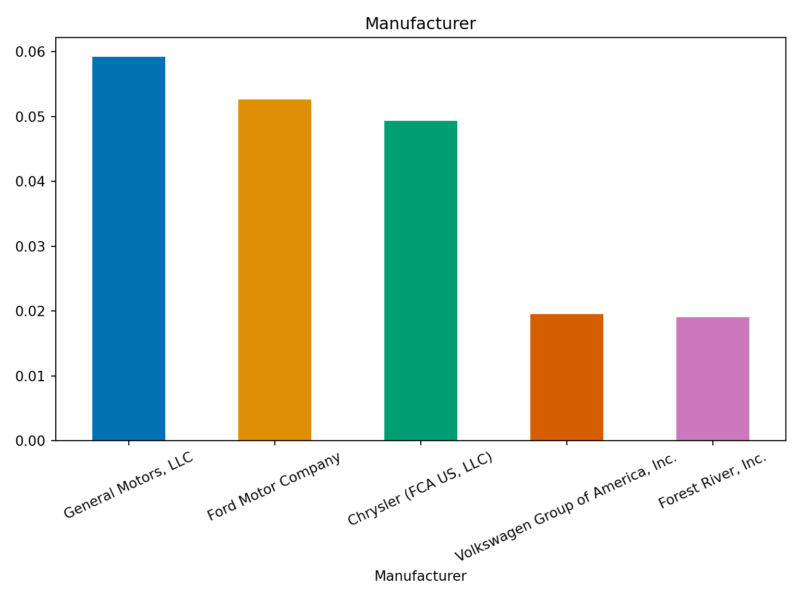
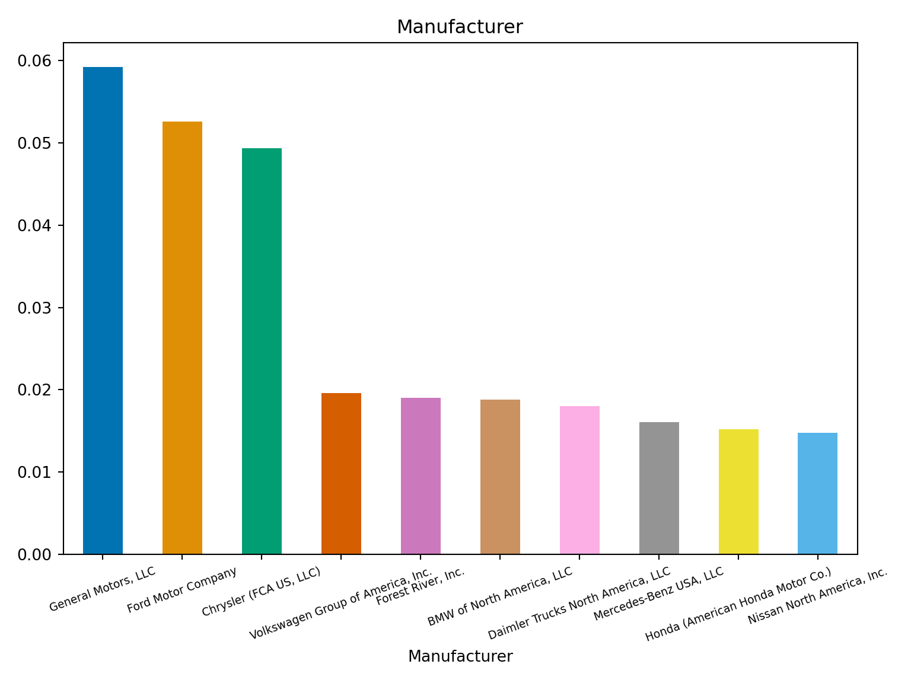
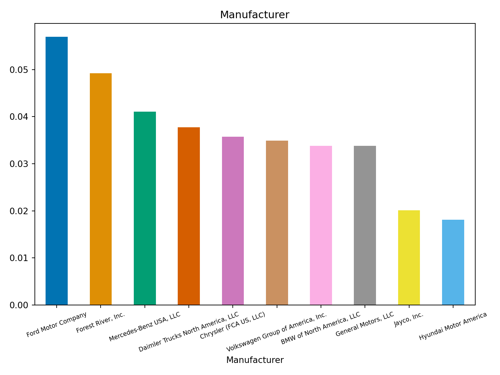

Section3 Variable Assessment and Visualization
This data is mostly categorical information, so we can visualize the data using bar graphs.
import numpy as np
import pandas as pd
import matplotlib.pyplot as plt
import seaborn as sns
from collections import defaultdictThe following code below builds a bar chart that visualizes the value counts of each category in the variable ‘Recall Type’. Normalize returns the relative frequency by dividing all values by the sum of values. I am also using a seaborn color palette to define the colors of the bars. I rotate the x-axis labels and tighten the layout to ensure that no text is cut off. Plots can be as simple or as complicated as you choose. I chose to make simple visualizations since their purpose is to understand the data but not to for a report.
This plot illustrates that the majority of recall type’s are in the vehicle category.
sns.set_palette("pastel") #seaborn color palette set
df['Recall Type'].value_counts(normalize=True).plot(kind='bar', title="Recall Type", figsize =(5,4),
color = sns.color_palette())
plt.xlabel('Recall Type')
plt.xticks(rotation=0, ha = 'center') #horizontal x-axis tick labels, centered## (array([0, 1, 2, 3]), [Text(0, 0, 'Vehicle'), Text(1, 0, 'Equipment'), Text(2, 0, 'Tire'), Text(3, 0, 'Child Seat')])Nearly 100% of the recalls in the entire dataset did not require a do not drive advisory.
plt.clf()
sns.set_palette("dark")
df['Do Not Drive Advisory'].value_counts(normalize=True).plot(kind='bar', title="Do Not Drive Advisory", figsize =(5,4), color = sns.color_palette())
plt.xlabel('Do Not Drive Advisory')
plt.xticks(rotation=0, ha = 'center')## (array([0, 1]), [Text(0, 0, 'False'), Text(1, 0, 'True')])The following plot summarizes the top 5 largest manufacturers based on the proportion of each manufacturer present in the data set. We can see that General Motors take up the largest proportion of the data, around 6%. We also can see that Ford and Chrysler take up around 5% each and then the proportions drop off.
plt.clf()
sns.set_palette("colorblind")
df['Manufacturer'].value_counts(normalize=True).nlargest(5).plot(kind='bar', title="Manufacturer", figsize =(5,4), color = sns.color_palette())
plt.xlabel('Manufacturer')
plt.xticks(rotation=25, ha = 'center', fontsize = 10)## (array([0, 1, 2, 3, 4]), [Text(0, 0, 'General Motors, LLC'), Text(1, 0, 'Ford Motor Company'), Text(2, 0, 'Chrysler (FCA US, LLC)'), Text(3, 0, 'Volkswagen Group of America, Inc.'), Text(4, 0, 'Forest River, Inc.')]) When we look at top 10 manufactuers, we can still see that after the drop from Chrysler to Volkswagen it remains relatively consistent for the remaining 7 manufacturers at about 2-1%.
plt.clf()
df['Manufacturer'].value_counts(normalize=True).nlargest(10).plot(kind='bar', title="Manufacturer", figsize =(5,4), color = sns.color_palette())
plt.xlabel('Manufacturer')
plt.xticks(rotation=20, ha = 'center', fontsize = 7)## (array([0, 1, 2, 3, 4, 5, 6, 7, 8, 9]), [Text(0, 0, 'General Motors, LLC'), Text(1, 0, 'Ford Motor Company'), Text(2, 0, 'Chrysler (FCA US, LLC)'), Text(3, 0, 'Volkswagen Group of America, Inc.'), Text(4, 0, 'Forest River, Inc.'), Text(5, 0, 'BMW of North America, LLC'), Text(6, 0, 'Daimler Trucks North America, LLC'), Text(7, 0, 'Mercedes-Benz USA, LLC'), Text(8, 0, 'Honda (American Honda Motor Co.)'), Text(9, 0, 'Nissan North America, Inc.')])
I created a new data set to only look at vehicle recalls in the last 5 years.
We can look at the same type of information at a more zoomed in perspective by narrowing our data window. We see a similar pattern in more recent years.
plt.clf()
vehicle_2019['Manufacturer'].value_counts(normalize=True).nlargest(10).plot(kind='bar',
title="Manufacturer", figsize =(5,4), color = sns.color_palette())
plt.xlabel('Manufacturer')
plt.xticks(rotation=20, ha = 'center', fontsize = 7)## (array([0, 1, 2, 3, 4, 5, 6, 7, 8, 9]), [Text(0, 0, 'Ford Motor Company'), Text(1, 0, 'Forest River, Inc.'), Text(2, 0, 'Mercedes-Benz USA, LLC'), Text(3, 0, 'Daimler Trucks North America, LLC'), Text(4, 0, 'Chrysler (FCA US, LLC)'), Text(5, 0, 'Volkswagen Group of America, Inc.'), Text(6, 0, 'BMW of North America, LLC'), Text(7, 0, 'General Motors, LLC'), Text(8, 0, 'Jayco, Inc.'), Text(9, 0, 'Hyundai Motor America')])
When we plot the continuous variable ‘Potentially Affected’ for vehicle recalls between 2019-2024 we can see that the the spread of the data is concentrated around the minimum value.
plt.clf()
sns.boxplot(vehicle_2019['Potentially Affected'])
plt.title('Box Plot')
plt.xlabel('Data')
plt.ylabel('Values')
plt.grid(True)
plt.show()I wanted to perform separate visualizations of outliers that are outliers and those that are not. I filtered any observations that fell above or below a threshold of +/- 1.5 * IQR which is a common way to identify outliers. I then removed those observations form the dataset so I could visualize what the spread of the data looks like without being influenced by outliers.
Q1 = np.percentile(vehicle_2019['Potentially Affected'], 25)
Q3 = np.percentile(vehicle_2019['Potentially Affected'], 75)
# Calculate IQR
IQR = Q3 - Q1
# Define outlier thresholds
lower_threshold = Q1 - 1.5 * IQR
upper_threshold = Q3 + 1.5 * IQR
# Identify outliers
outliers = vehicle_2019[(vehicle_2019['Potentially Affected'] < lower_threshold) | (vehicle_2019['Potentially Affected'] > upper_threshold)]
outliers_ids = outliers['NHTSA ID']
vehicle_2019_nouts = vehicle_2019[~vehicle_2019['NHTSA ID'].isin(outliers_ids)]We can now see that our range goes from 0 to 10,000. The data is still strongly right skewed suggesting that majority of the vehicle recalls only affected a small group of the population.
plt.clf()
sns.histplot(data=vehicle_2019_nouts, x='Potentially Affected', bins=50);
plt.title("Histogram")
plt.show()plt.clf()
sns.boxplot(vehicle_2019_nouts['Potentially Affected'])
plt.title('Box Plot')
plt.xlabel('Data')
plt.ylabel('Values')
plt.grid(True)
plt.show()In our outlier data we can see the spread is extremely wide with an observation where 3.5 million people were potentially affected.
plt.clf()
sns.histplot(data=outliers, x='Potentially Affected', bins = 100)
plt.ticklabel_format(style='plain', axis='x')
plt.title("Histogram")
plt.show()It can be difficult to tell where the range of values really begins by taking the min we can see that the first value in the outliers is 10,969 if we wanted to know the exact value.
## 10969.0